TestNeo — 機能・導線・画面
確認日：2026年10月27日。全体比較・画面／動画ギャラリー
調査範囲
公開Playgroundの実行と、Release IntelligenceのPR・リスク・リリース判断は別の範囲。
公開実行の成功はサービス表示と動画による確認。自社アプリ・PR接続・過去障害の取込・判断履歴の作成は未実施。
作業の流れ
Playground: テンプレート／自然言語 → Preview plan → Run live → Timeline・Events → 画像／動画・SDK。製品: PR取込 → 影響分析 → リスク → 検証 → PASS／WARN／BLOCK
機能の構成
PlaygroundのWeb／APIとPlan・Live Execution・Timeline・Event trace。別途PR Validation、Impact Analysis、Verification、Release Decision。
下表は公開説明・文書の要約。実操作した範囲は画面一覧と調査範囲に限定し、表全体を実機検証済みとはしない。
| 段階 | 画面・機能 | 入力・操作と次の行動 |
|---|---|---|
| 開始 | Playground | 公開ゲスト枠でテンプレートを選び、自然言語の意図を入力する。 |
| 確認 | Preview plan | navigate／fill／click／wait／verify等の計画を実行前に確認する。 |
| 実行 | Run live | 公開Web Smokeを1回実行。画面上で6passed・0failedと表示された。 |
| 結果 | Timeline・Event trace | ステップの時間軸と接続・開始・更新・完了のイベントを切り替える。 |
| 証拠 | Screenshots・Playback | 6枚の画像と28秒の対象操作動画。再生を確認済み。 |
| 利用 | SDK output | プログラム利用への出力入口。取得コードの検証は未実施。 |
| 変更検証 | Release Intelligence | PR差分・要求・障害履歴から影響とリスクを扱い、検証の根拠を提示する。 |
| 判断・履歴 | Decision Board | PASS／WARN／BLOCKと判断の履歴。Playgroundの成功をこの機能の実証とはしない。 |
人の担当と比較上の着眼点
期待を書く、計画を確認する、リリース判断の根拠を読む。
調査者の解釈：入力→計画→実行→証拠の区切りが明確。実行の成功とリリース判定を別の機能として比較できる。 製品性能の優劣を実証した結論ではない。
動画と見る場面
- 当調査で起動したサンプルRunの生成動画を再生（30.5秒、recorded-public-demo）。公式の掲載元。
画面一覧
| 画面 | 種別 | 出典 |
|---|---|---|
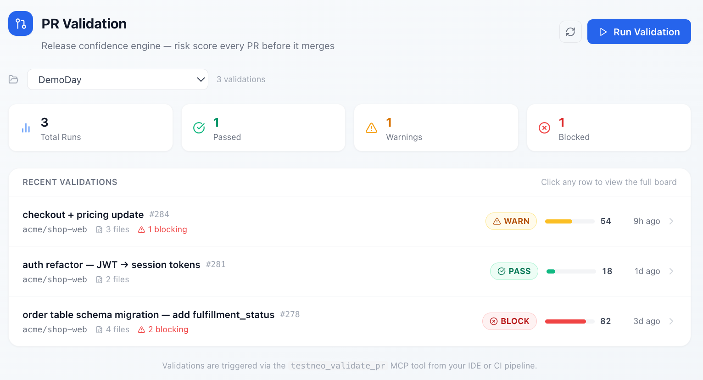 TestNeo Release Intelligence Platform |
official-ui-image | 掲載元 |
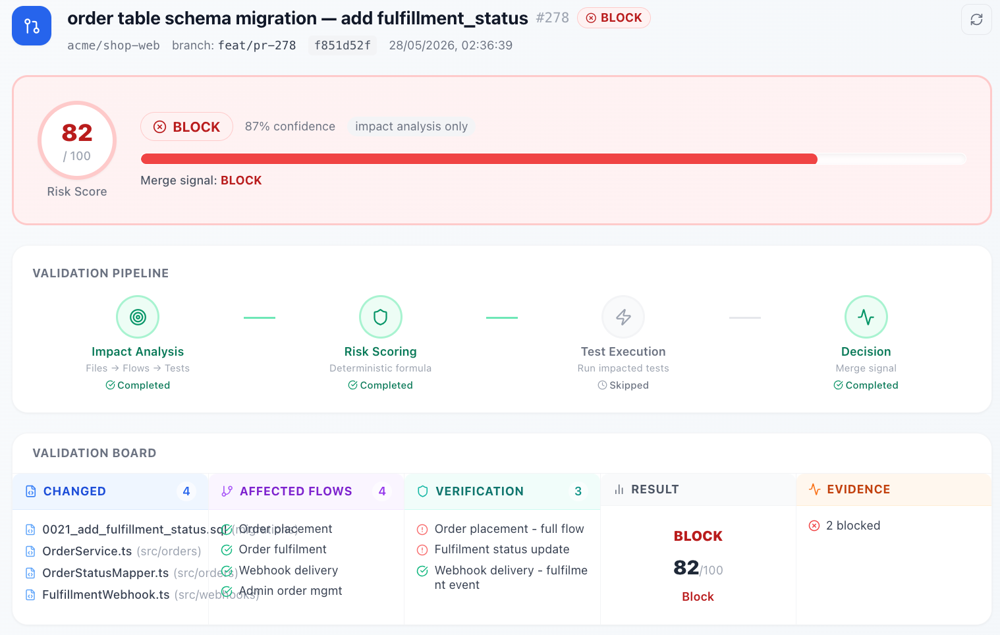 TestNeo Release Intelligence Dashboard |
official-ui-image | 掲載元 |
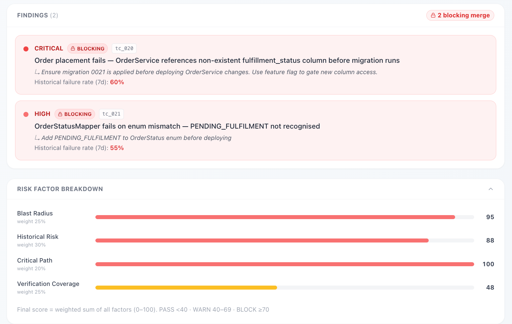 TestNeo Impact Analysis View |
official-ui-image | 掲載元 |
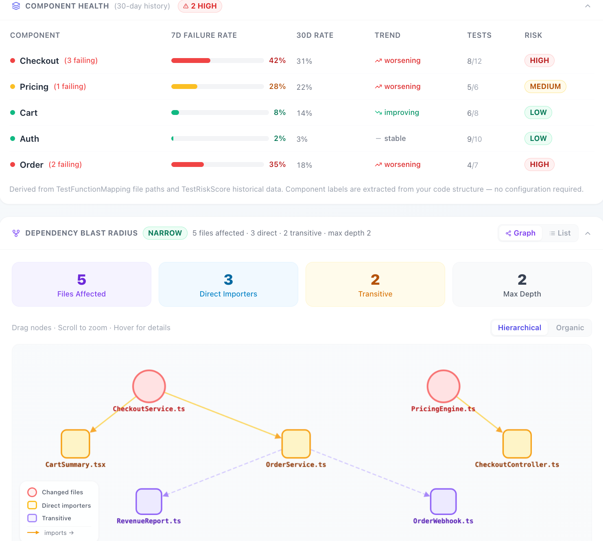 TestNeo Verification Execution |
official-ui-image | 掲載元 |
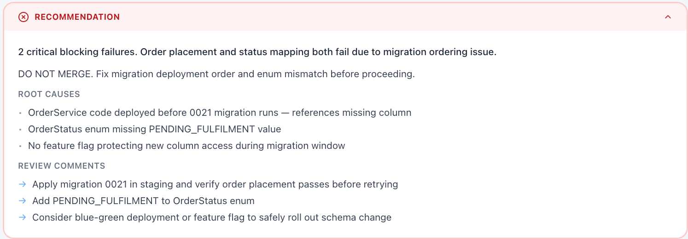 TestNeo Release Decision Board |
official-ui-image | 掲載元 |
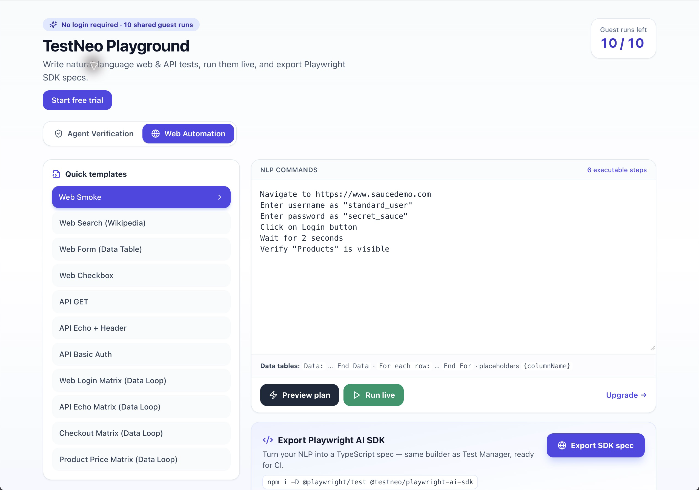 Playground：入力 |
public-demo-ui | 掲載元 |
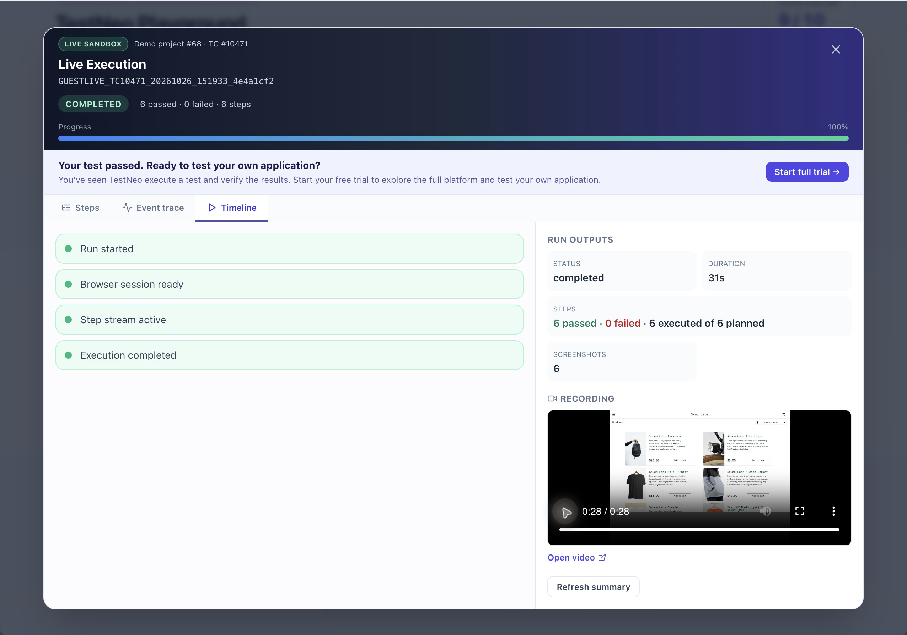 実行動画の再生 |
public-demo-ui | 掲載元 |
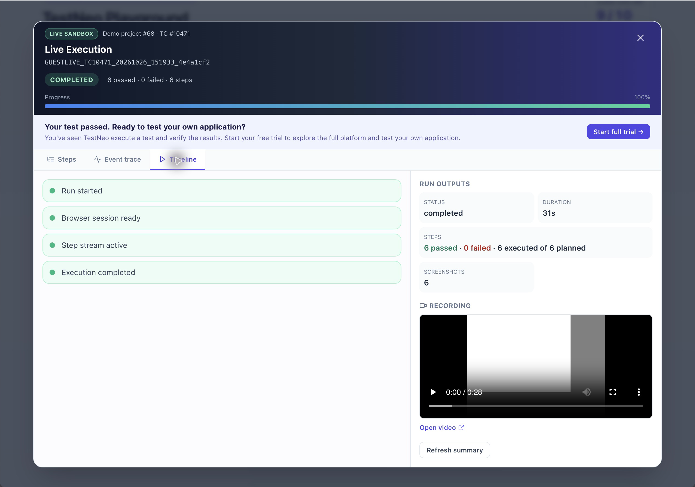 Timeline |
public-demo-ui | 掲載元 |
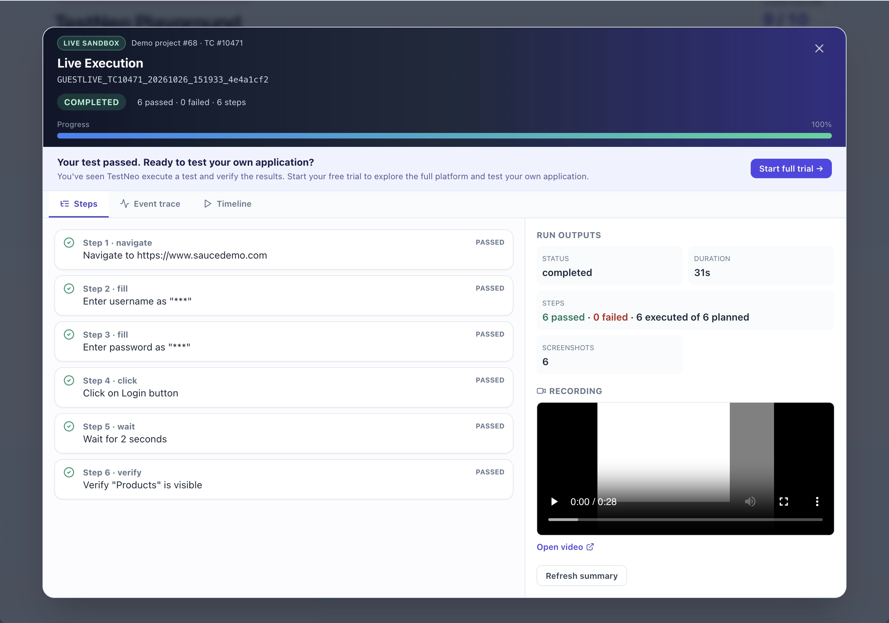 完了結果 |
public-demo-ui | 掲載元 |
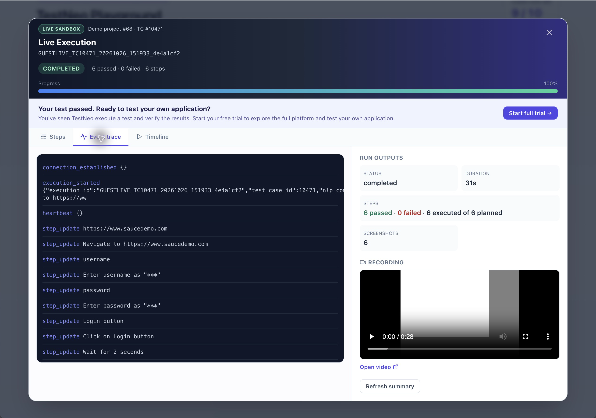 Event trace |
public-demo-ui | 掲載元 |
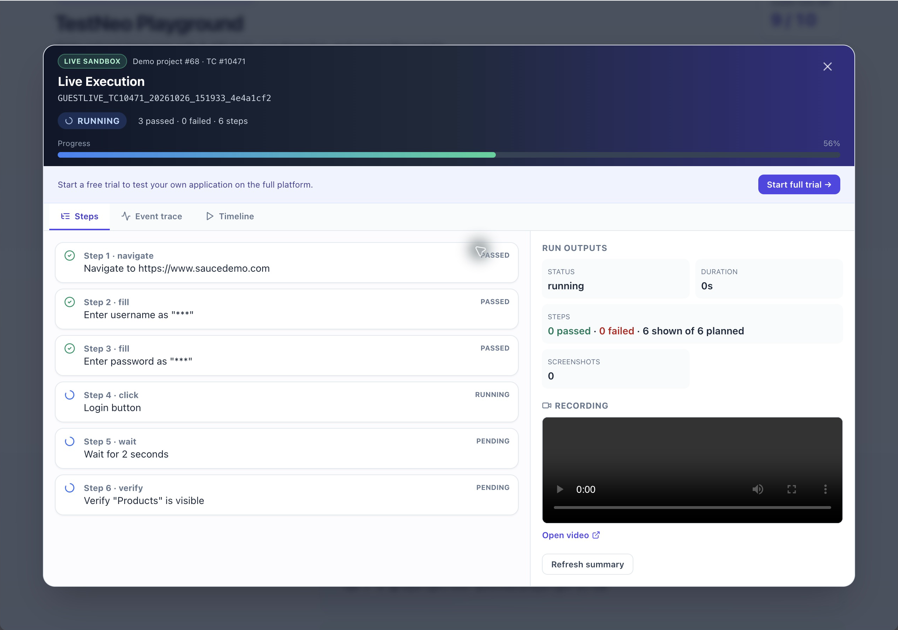 Run live：実行中 |
public-demo-ui | 掲載元 |
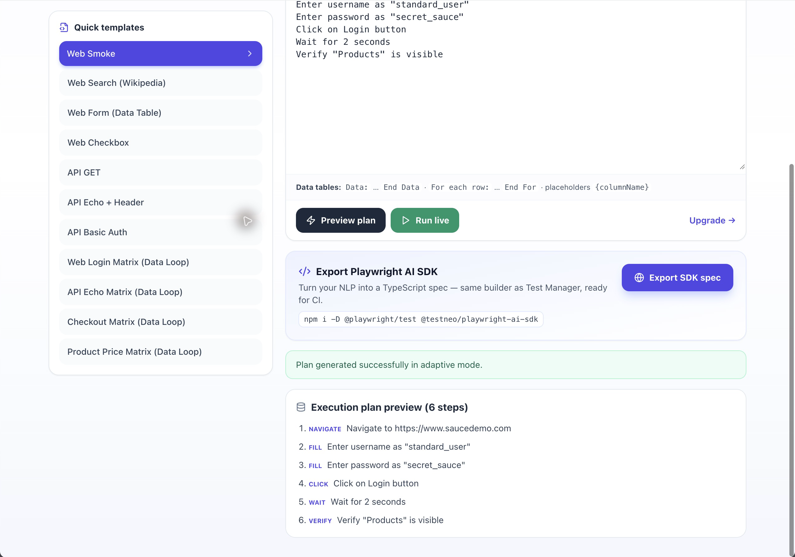 Preview plan：実行計画 |
public-demo-ui | 掲載元 |